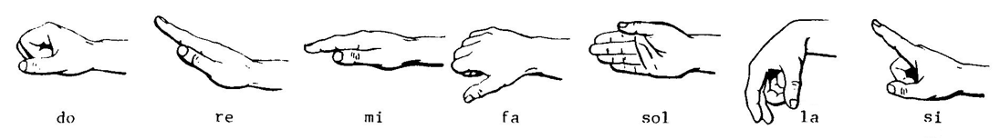

The words in Solresol consist of sequences of notes.
Invented by Jean-François Sudre, Solresol is an artificial language based on the seven syllables of Music(do, re, mi, fa, sol, la, si). There are no specific pronunciation rules beyond the standard readings of the solfège.

Due to each syllable being fairly distinct, they may be pronounced in almost any way the reader prefers, but it is necessary to leave a brief pause between words so that each word remains clearly separate. It is absolutely unnecessary to be familiar with music to learn and to speak this language.
Words are formed from one, two, three and four notes. The language has seven words of one note, 49 words of two notes, 336 words of three notes, 2268 words of four notes, and 9072 words of five notes. Here are the words of one note:
- do no, not, neither, nor
- re and, as well as
- mi or, or even
- fa to
- sol if
- la the
- si yes, okay, gladly, agreed
Words of 2 notes are used for pronouns, common particles and those with repeated syllables are tenses. Here are the words of two notes:
| -do | -re | -mi | -fa | -sol | -la | -si/-ti | |
|---|---|---|---|---|---|---|---|
| Do- | (past) | I, me | you(sing.) | she, he, they(sing.) | self, oneself | one, someone | other |
| Re- | my, mine | (pluperfect) | your, yours(sing.) | hers, his, their(sing.) | our, ours | your, yours(plur.) | their |
| Mi- | for, in order to/that | who, which (rel pron), that (conj) | (future) | whose, of which | well (adv) | here/there is, behold | good evening/night |
| Fa- | what? | with, jointly | this, that | (conditional) | why, for what reason | good, tasty, delectable | much, very, extremely |
| Sol- | but | in, within | wrong, ill (adv) | because | (imperative) | perpetually, always, without end, without ceasing | thank, thanks |
| La- | nothing, no one, nobody | by | here, there | bad | never, at no time | (present participle) | of |
| Si- | the same (thing) | each, every | good morning/afternoon | little, scarcely | * | * | (passive participle) |
In moderm Solresol, the definitions of sisol and sila are part of an honorifics system inspired by what is used in Japanese; both are gender-neutral titles, one to be respectful, and one to be affectionate. Pronouns do not change depending on gender. Instead, they are simply translated into English as neutral pronouns; it and they.
A unique feature of Solresol is that meanings can be inverted by reversing the syllables in words. For instance fala means good or tasty, and lafa means bad. Interruptions in the logical order of words in each category are usually caused by these reversible words.
| misol good | solmi evil |
| fala good, tasty | lafa bad |
| solla always | lasol never |
| fasi much, very | sifa little, scarcely |
| misisol good fortune, happiness | solsimi misfortune |
| solsi climb, ascend | sisol descend |
| solsifa laugh | fasisol weep, sob |
| simila ease | lamisi difficulty |
| fasimisi advance | simisifa draw back, retreat |
Grammar
To keep sentences clear, especially with the possibility of information loss while communicating, certain parts of speech follow a strict word order. Adjectives always follow the noun they modify. Indirect objects always come after the verb. Tenses always precede verbs. To make a word plural, lengthening the last syllable is used.
To make this an affirmative statement, you add the personal pronoun afterwards:
- My health is good. - Redofafa dore.
- I will go to the countryside this year. - Fadoremi dore.
- I will go to the theatre tonight. - Soldoremi dore.
To make question one places the subject of the sentence after the verb instead of before the verb, a construction common in European languages.
- Am I? - Faremi dore?
- Does he understand? - Falafa dofa?
- Are you learning? - Sidosi domi?
Accessibility
One can make themself understood in the Universal Language Solresol, not only by speaking out loud, but also without speaking, by night or by day, from near or far, on sea or on land. This language provides a means for deaf-mutes of all countries to communicate with each other, with the blind, and with everyone else; and it does so likewise in many ways. It can be spoken, written, silent and hidden; it can be practiced through mime, telegraphy, visual signs, stenography, sound, telephony, maritime signals and music.
One can see that the three extended fingers replace the three lines of the musical scale. For the repeated notes, one makes the same sign two times with the hand.

If dealing with someone who is familiar with music, one has an additional possibility, because he can practice Solresol by playing slowly, one by one, the notes on any kind of musical instrument, separating every word as needed.
To communicate the words to a deaf-mute, one can take the hand of a blind person and alternately press the fingers, as in the mute Universal Language;
Two people facing each other at a distance, as for example from one window to another, across a street or a square, can communicate using the stenographic symbols in such a way that only they can see them. In this manner, a prisoner can, through the bars of his window, express his thoughts to the outside world, and vice-versa.
One can make use of Solresol at sea, to communicate from one ship to another, or from a ship to a seaport, or vice-versa, and again in many ways: By displaying from a distance enlarged versions of the stenographic signs or the first seven numbers--hollowed out and illuminated, if at night. Or, at night, by displaying bright lanterns or fires of the 7 colors.
Numbers
- The numeration proceeds by periods of six numbers, each number being a name made of three notes, never repeating the same note three times (an implicit rule of Solresol).
- From one to six, words begin with re, the second note is discriminating and repeated once, with the exception of re: redodo [1], remimi [2], refafa [3], resolsol [4], relala [5], and resisi [6]. Zero is soldo, which means nothing.
- From seven to twelve, the two first notes are mimi, the third one being cyclical, mi not being represented: mimido [7], mimire [8], mimifa [9], mimisol [10], mimila [11], and mimisi [12].
- We then go to the next series, from thirteen to eighteen, which first note is mi and the second cycling from do to si (bypassing mi) and repeated once: midodo [13], mirere [14], mifafa [15], misolsol [16], milala [17], and misisi [18].
- The next series goes from nineteen to sixty, its two first notes are fafa, the third one cycling from do through si (bypassing fa): fafado [19], fafare [20], fafami [30], fafasol [40], fafala [50], and fafasi [60].
- We then go to eighty, then to the powers of ten, beginning with fa followed by the cycle from do to si, repeated once (and bypassing fa): fadodo [80], farere [100], famimi [1,000], fasolsol [million], falala [billion], fasisi [trillion].
- By construct, Solresol belongs to the short scale numbering systems as each scale number multiple of one thousand has a name (fasolsol [million], falala [billion], fasisi [trillion]).
- It could be interesting to think about the bigger scale names. Logical series for 1015, 1018 and 1021 would be either soldore (to copy), soldomi (to imitate) and soldofa (example), or soldodo (Sunday), solrere (past) and solmimi (present). As Solresol is based on a very restricted set of notes, neologisms quickly come into conflict with existing words if we want to keep their internal logic (here the fact that a number is made of three syllables).
- 1 redodo
- 2 remimi
- 3 refafa
- 4 resolsol
- 5 relala
- 6 resisi
- 7 mimido
- 8 mimire
- 9 mimifa
- 10 mimisol
- 11 mimila
- 12 mimisi
- 13 midodo
- 14 mirere
- 15 mifafa
- 16 misolsol
- 17 milala
- 18 misisi
- 19 fafado
- 20 fafare
- 30 fafami
- 40 fafasol
- 50 fafala
- 70 fafasi mimisol
- 80 fadodo
- 90 fadodo mimisol
- 100 farere
- 1,000 famimi
- one million fasolsol
- one billion falala
- one trillion fasisi